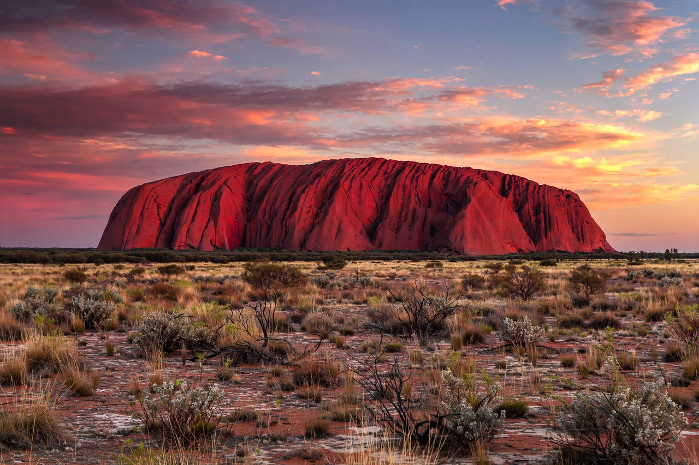

| Uluru / Ayers Rock | |
|---|---|
 | |
| Location | Petermann, Northern Territory, Australia |
| Elevation | 863 m (2,831 ft); 348 m above the plain |
| Circumference | 9.4 km (5.8 mi) |
| Geology | Arkose sandstone inselberg |
| Traditional owners | Aṉangu (Pitjantjatjara) |
Uluru, also known as Ayers Rock, is a large sandstone monolith in the southern part of the Northern Territory, Australia. It lies 335 km (208 mi) south-west of Alice Springs and is sacred to the Pitjantjatjara, the Aboriginal people of the area, known as the Aṉangu. The area around the formation is abundant with springs, waterholes, rock caves and ancient paintings, and is listed as a UNESCO World Heritage Site. Uluru and Kata Tjuta, also known as the Olgas, are the two major features of the Uluṙu-Kata Tjuṯa National Park.
Uluru is an inselberg — literally "island mountain" — a remnant of a mountain range eroded over hundreds of millions of years. It is composed of arkose, a coarse-grained sandstone rich in feldspar, deposited about 550 million years ago. The rock's flaky surface oxidises, giving it a rusty red colour that appears to change through the day, glowing especially at dawn and sunset. Most of the monolith lies underground, extending perhaps five to six kilometres below the plain.
Aṉangu have inhabited the region for tens of thousands of years, and Uluru features centrally in Tjukurpa (Dreaming) law and ceremony. The first European to sight it was the surveyor William Gosse in 1873, who named it Ayers Rock after Sir Henry Ayers. In 1985 title to the land was handed back to the traditional owners, who lease it to Parks Australia; the park is jointly managed. After decades of campaigning by Aṉangu, the climb to the summit was permanently closed on 26 October 2019.
The nearby resort town of Yulara serves visitors, who walk the 10.6 km base circuit, visit the cultural centre and view the rock from designated sunrise and sunset areas.